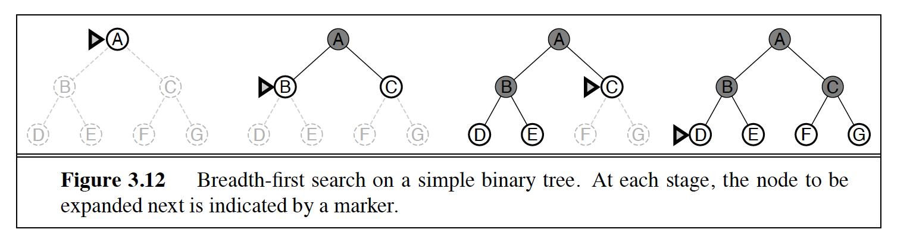
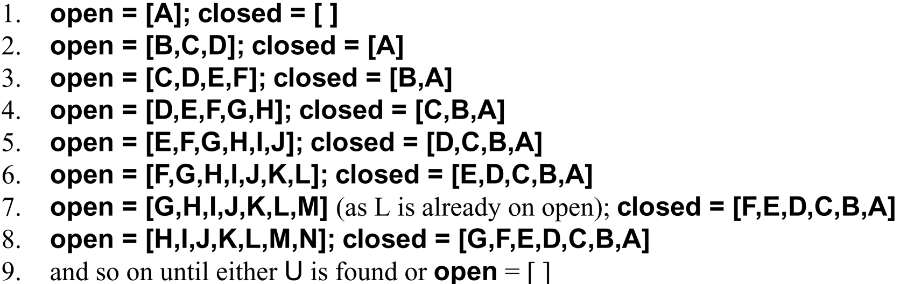
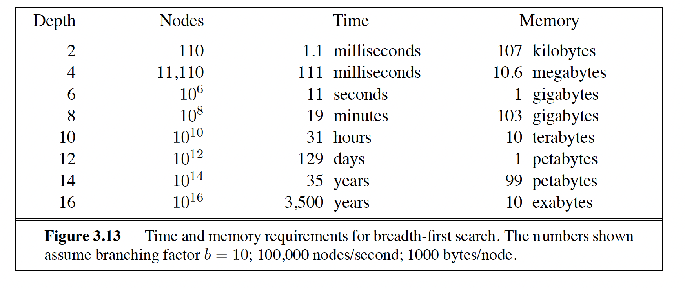
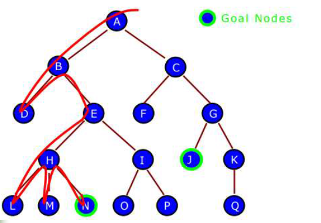
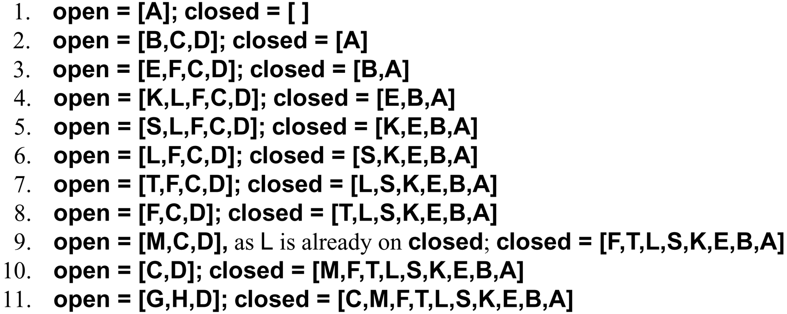
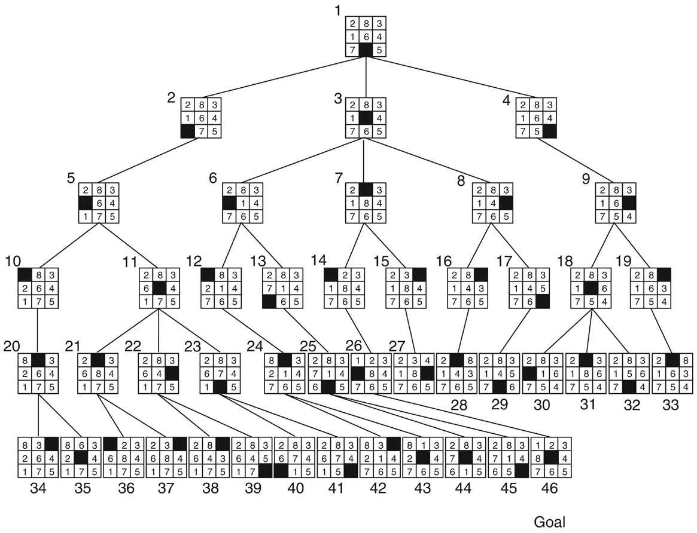
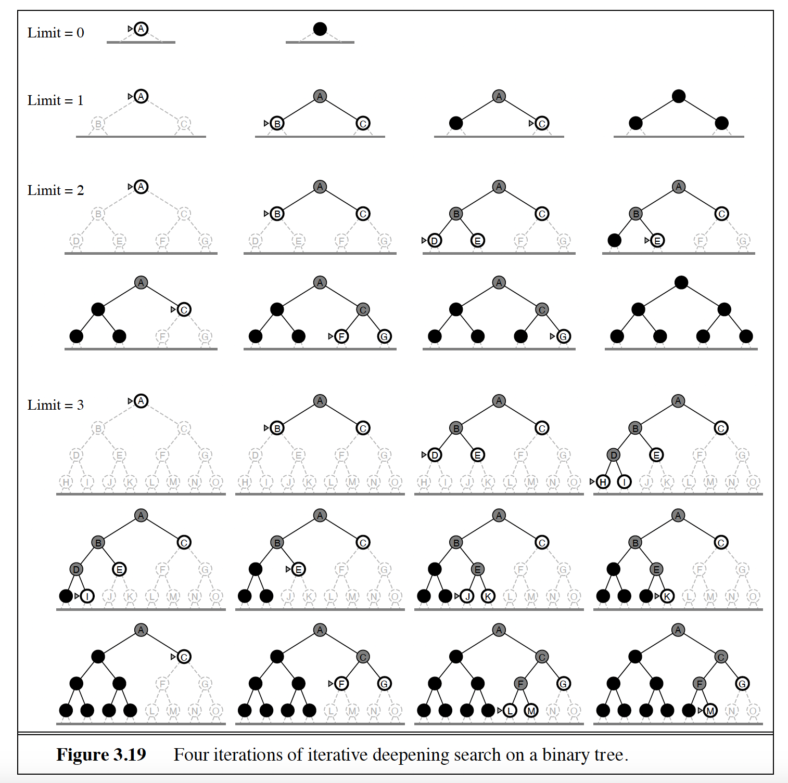
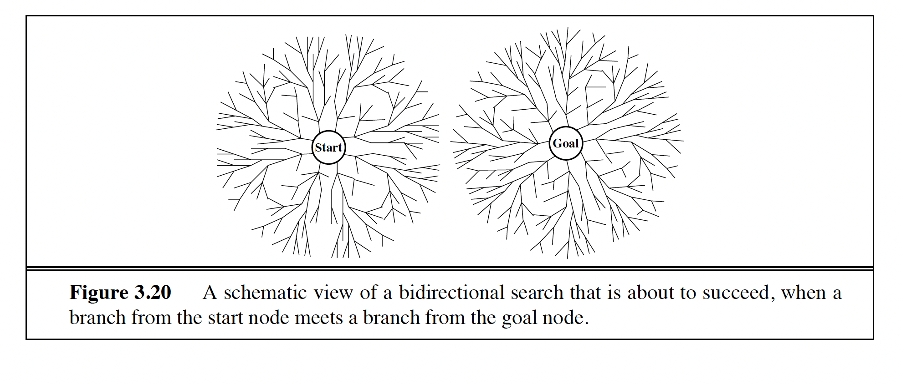
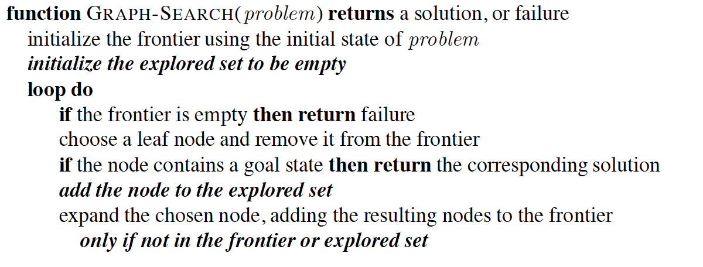
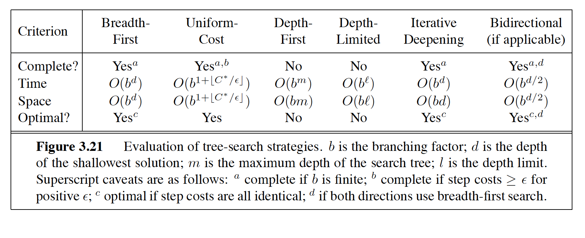

BFS, DFS, depth-limited, iterative deepening, uniform cost and bidirectional search — with full traces.
Module 5 · Based on Russell & Norvig, AIMA Section 3.4
Intermediate Search ~45 minPrerequisites: Module 4 — Problem Solving (state spaces, problem formulation, the frontier, and what "expanding a node" means).
Uninformed (blind) search uses only the information in the problem definition itself — states, actions, goal test, step costs. It has no estimate of how far any state is from the goal. That knowledge arrives in Module 6; for now, we search in the dark.
Here is the punchline of this whole module: every blind algorithm runs the same loop — take a node from the frontier, test it, expand it, add its children. The only real difference between them is which fringe node gets expanded next. Change the queue discipline, and you change the algorithm:
| Algorithm | Frontier discipline |
|---|---|
| Breadth-first (BFS) | FIFO queue — oldest node first |
| Depth-first (DFS) | LIFO stack — newest node first |
| Uniform cost (UCS) | Priority queue ordered by path cost g(n) |
| Depth-limited (DLS) | DFS with a depth cutoff ℓ |
| Iterative deepening (IDS) | Repeated DLS with limits 0, 1, 2, … |
| Bidirectional | Two frontiers, grown from start and goal until they meet |
Every trace in this module uses one directed graph, so you can compare the algorithms move for move. Start state S, goal state G. Arrows show the direction of each action; ◀──▶ means an edge in both directions.
| Node | Successors (generated in this order) |
|---|---|
| S | A, D |
| A | B, D |
| B | C, E |
| C | — (dead end) |
| D | A, E |
| E | B, F |
| F | C, G |
| G | — (goal) |


open (frontier, a FIFO queue) and closed lists at each step — children are added to the back of open, so shallow nodes come out first. (From the course slides.)
BFS explores the state space level by level: it examines every state at depth 1 before any state at depth 2, and so on. The open list is a FIFO queue — new states are added at the right end, and the state to expand is removed from the left end. Whatever entered the queue first gets expanded first, which is exactly what "shallowest node first" means.
| Step | Node expanded | Frontier (open) | Closed |
|---|---|---|---|
| 0 | — (initialize) | [ S ] | [ ] |
| 1 | S → children A, D | [ A, D ] | [ S ] |
| 2 | A → children B, D (D already on open → discarded) | [ D, B ] | [ S, A ] |
| 3 | D → children A, E (A on closed → discarded) | [ B, E ] | [ S, A, D ] |
| 4 | B → children C, E (E already on open → discarded) | [ E, C ] | [ S, A, D, B ] |
| 5 | E → children B, F (B on closed → discarded) | [ C, F ] | [ S, A, D, B, E ] |
| 6 | C → no children (dead end) | [ F ] | [ S, A, D, B, E, C ] |
| 7 | F → children C, G (C on closed → discarded) | [ G ] | [ S, A, D, B, E, C, F ] |
| 8 | G — goal test succeeds → SUCCESS | [ ] | — |
Order of expansion: S, A, D, B, E, C, F, G — a clean level-by-level sweep: depth 0 (S), depth 1 (A, D), depth 2 (B, E), depth 3 (C, F), then G.
Assume a modest branching factor b = 10, generating 10,000 nodes/second, storing 1,000 bytes/node:
| Depth | Nodes | Time | Memory |
|---|---|---|---|
| 2 | 1,100 | 0.11 seconds | 1 MB |
| 4 | 111,100 | 11 seconds | 106 MB |
| 6 | 107 | 19 minutes | 10 GB |
| 8 | 109 | 31 hours | 1 TB |
| 10 | 1011 | 129 days | 101 TB |
| 12 | 1013 | 35 years | 10 petabytes |
Even at depth 10 you wait months and need a data center's worth of RAM. Faster hardware barely helps — the exponential bounds dominate any constant-factor speedup. Memory, not time, is what kills BFS first in practice.


open (frontier, a stack) and closed lists at every step of the depth-first trace — note how children are added to the front of open. (From the course slides.)
DFS goes deeper whenever possible. When a state is examined, all of its descendants are examined before any of its siblings; the algorithm only backs up when it hits a dead end. Mechanically the change from BFS is tiny: children are added to — and removed from — the left end of open, turning it into a LIFO stack.
| Step | Node expanded | Frontier (open) | Closed |
|---|---|---|---|
| 0 | — (initialize) | [ S ] | [ ] |
| 1 | S → children A, D | [ A, D ] | [ S ] |
| 2 | A → children B, D (D already on open → discarded) | [ B, D ] | [ S, A ] |
| 3 | B → children C, E | [ C, E, D ] | [ S, A, B ] |
| 4 | C → no children (dead end → back up) | [ E, D ] | [ S, A, B, C ] |
| 5 | E → children B, F (B on closed → discarded) | [ F, D ] | [ S, A, B, C, E ] |
| 6 | F → children C, G (C on closed → discarded) | [ G, D ] | [ S, A, B, C, E, F ] |
| 7 | G — goal test succeeds → SUCCESS | [ D ] | — |
Order of expansion: S, A, B, C, E, F, G. Notice D was generated at step 1 but never expanded — DFS dove down S→A→B and found the goal before ever returning to S's second child. Compare that with the BFS trace: same graph, same rules, completely different journey.
A backtracking variant of DFS generates only one successor at a time instead of all children at once, and modifies a single state description in place, undoing the change when it backs up. Memory drops from O(bm) to O(m) — just one path. This trick powers constraint solvers and game-tree search.

DFS's fatal flaw is the bottomless pit. Depth-limited search fixes it bluntly: run DFS, but treat every node at depth ℓ as if it had no successors. A DLS run has three possible outcomes:
| Outcome | Meaning |
|---|---|
| solution | A goal was found within the limit. |
| failure | The whole space within the limit was searched — no solution exists anywhere. |
| cutoff | No solution within depth ℓ — but one might exist deeper. |
The catch: choosing ℓ is hard. Too small and you cut off the only solution; too large and you waste work exploring depths you never needed (and re-inherit DFS's non-optimality).
If you don't know the right limit — try them all. IDS runs DLS with limit 0, then 1, then 2, … until a solution appears. Each run is a cheap, linear-memory DFS; the increasing limits guarantee the shallowest solution is found first. IDS thus combines BFS's completeness and optimality (for unit costs) with DFS's O(bd) memory.
Mini-trace on the running graph (goal G is at depth 4, so limits 0–2 all end in cutoff — watch the shallow nodes get re-expanded each round):
| Limit ℓ | Order of expansion (tree search, cutoff at depth ℓ) | Result |
|---|---|---|
| 0 | S | cutoff |
| 1 | S, A, D | cutoff |
| 2 | S, A, B, D, D, A, E (B, D reached via A; A, E via D — repeats are the price of forgetting) | cutoff |
| 3, 4 | limits 3 and 4 continue the same way; at ℓ = 4 the depth-4 path S → D → E → F → G is finally within the limit and G is found | solution at ℓ = 4 |
It feels wasteful to redo depth 0–3 while searching depth 4. But in an exponential tree, most nodes live at the deepest level — the levels above are a rounding error. The root is regenerated d+1 times, level 1 nodes d times, …, and the huge bottom level only once:
(d+1)b⁰ + d·b¹ + (d−1)b² + … + 1·bᵈ = O(bᵈ)
For b = 10, d = 5: IDS generates 123,456 nodes where BFS generates 111,111 on the same tree — only about 11% overhead, in exchange for exponentially less memory.
When step costs differ, "shallowest first" is the wrong rule — a two-step path can be cheaper than a one-step path. Uniform cost search expands the frontier node with the lowest path cost g(n), using a priority queue. If a cheaper route to a node already on the frontier is found, its entry is updated. UCS is optimal for any step costs ≥ ε > 0 and complete; time and space are O(b1+⌊C*/ε⌋), where C* is the optimal solution cost.
A small weighted graph (separate from the running example, since that one is unweighted). The direct edge S→G costs 12; the scenic route S→A→B→G costs 1 + 3 + 3 = 7.
| Step | Node expanded (g) | Frontier (open, with g) | Closed |
|---|---|---|---|
| 0 | — (initialize) | [ S:0 ] | [ ] |
| 1 | S (g=0) → A via S (g=1), G via S (g=12) | [ A:1, G:12 ] | [ S ] |
| 2 | A (g=1) → B via A (g=1+3=4) | [ B:4, G:12 ] | [ S, A ] |
| 3 | B (g=4) → G via B (g=4+3=7) — cheaper than 12, replace! | [ G:7 ] | [ S, A, B ] |
| 4 | G (g=7) — goal → SUCCESS, path S→A→B→G, cost 7 | [ ] | — |
BFS would have returned S→G at cost 12 (fewest steps). UCS waits: G sat on the frontier at cost 12 from step 1, but was not expanded — and hence not goal-tested — until it was the cheapest frontier node. That patience is exactly what makes UCS optimal.
Just as IDS replaces BFS's queue with repeated depth-bounded DFS, iterative lengthening replaces UCS's queue with repeated DFS runs bounded by increasing path-cost limits instead of depth limits. It keeps UCS's optimality while avoiding its memory cost — but with real-valued costs each new limit may admit only a handful of new nodes, so it incurs substantial re-expansion overhead and is rarely a win in practice.

Why grow one exponential tree of depth d when you can grow two of depth d/2? Bidirectional search runs a forward search from the start and a backward search from the goal simultaneously, stopping when the two frontiers meet. Since bd/2 + bd/2 ≪ bd, the savings are enormous:
Time and space are O(bd/2) — but note the space bound: at least one frontier must be held in memory to detect the intersection, so bidirectional search is memory-hungry like BFS, just for a much smaller exponent.

On our running graph, A and D generate each other, and B and E do too. A search that forgets where it has been will bounce A→D→A→D… forever — algorithms that forget their history are doomed to repeat it. In the worst case, repeated states can blow a linear-size problem up into an exponential tree. There are three increasingly thorough (and increasingly expensive) defenses:
| Level | Rule | Cost | Catches |
|---|---|---|---|
| 1 | Don't return to the parent you just came from. | Almost free (one comparison) | Trivial back-and-forth loops (A→D→A) |
| 2 | Don't create cyclic paths — check each child against all of its ancestors on the current path. | O(depth) per child | All cycles, but not repeats via different routes |
| 3 | Don't generate any previously generated state — keep every visited state on a closed list and check against it. This is graph search. | Memory for every state ever seen | Everything — each state expanded at most once |
The closed list is exactly what our BFS and DFS traces used ("discard children already on open or closed") — it's why each trace expanded every state at most once. But storing all visited states can erase DFS's and IDS's precious linear-space advantage. As so often in search: you pay either in memory (remember everything) or in time (re-explore what you forgot).

The classic summary (AIMA Figure 3.21). Here b = branching factor, d = depth of the shallowest solution, m = maximum depth of the space, ℓ = depth limit, C* = optimal solution cost, ε = minimum step cost.
| Criterion | BFS | UCS | DFS | DLS | IDS | Bidirectional |
|---|---|---|---|---|---|---|
| Complete? | Yes (b finite) | Yes | No | No | Yes | Yes |
| Time | O(bd+1) | O(b1+⌊C*/ε⌋) | O(bm) | O(bℓ) | O(bd) | O(bd/2) |
| Space | O(bd+1) | O(b1+⌊C*/ε⌋) | O(bm) | O(bℓ) | O(bd) | O(bd/2) |
| Optimal? | Yes (unit costs) | Yes | No | No | Yes (unit costs) | Yes (unit costs, both sides BFS) |
Do these on paper before opening the solutions. Tracing by hand is the only way this really sticks.
Use this tree (children generated left to right; node 7 is the goal). Give the order of expansion for BFS and for DFS, with full open/closed lists, using the same conventions as the traces above.
BFS — order of expansion: 1, 2, 3, 4, 5, 6, 7
| Step | Node expanded | Frontier (open) | Closed |
|---|---|---|---|
| 0 | — | [ 1 ] | [ ] |
| 1 | 1 → 2, 3 | [ 2, 3 ] | [ 1 ] |
| 2 | 2 → 4, 5 | [ 3, 4, 5 ] | [ 1, 2 ] |
| 3 | 3 → 6 | [ 4, 5, 6 ] | [ 1, 2, 3 ] |
| 4 | 4 → none | [ 5, 6 ] | [ 1, 2, 3, 4 ] |
| 5 | 5 → 7 | [ 6, 7 ] | [ 1, 2, 3, 4, 5 ] |
| 6 | 6 → none | [ 7 ] | [ 1, 2, 3, 4, 5, 6 ] |
| 7 | 7 — goal → SUCCESS | [ ] | — |
DFS — order of expansion: 1, 2, 4, 5, 7 (nodes 3 and 6 are never expanded)
| Step | Node expanded | Frontier (open) | Closed |
|---|---|---|---|
| 0 | — | [ 1 ] | [ ] |
| 1 | 1 → 2, 3 | [ 2, 3 ] | [ 1 ] |
| 2 | 2 → 4, 5 (on left) | [ 4, 5, 3 ] | [ 1, 2 ] |
| 3 | 4 → none (back up) | [ 5, 3 ] | [ 1, 2, 4 ] |
| 4 | 5 → 7 (on left) | [ 7, 3 ] | [ 1, 2, 4, 5 ] |
| 5 | 7 — goal → SUCCESS | [ 3 ] | — |
A uniform tree has branching factor b = 3, shallowest solution at depth d = 4, and maximum depth m = 4. In the worst case, how many nodes does BFS generate (count all levels up to depth d+1, matching the O(bd+1) bound)? How many nodes does DFS store at most (the O(bm) bound)? Compare.
BFS, nodes generated (levels 0 through d+1 = 5):
DFS, nodes stored: at most b nodes per level of the current path, over m levels, plus the root:
Comparison: 364 vs. 13 — DFS needs roughly 28× less memory, and the gap grows exponentially with depth. That single fact is why IDS (which searches breadth-first order with depth-first storage) is such a good deal.
A warehouse robot must find a route through a large grid maze. Every move costs the same (unit costs). The robot's onboard computer has very little memory, the maze is huge, and nobody knows how long the shortest route is. Which blind search strategy should it use, and why? Rule out at least two alternatives.
Answer: Iterative Deepening Search (IDS).
One refinement: in a grid maze, pair IDS with cycle checking (level 2 of the repeated-state defenses) so depth-first probes don't wander in circles within a single iteration.
Trace all six blind strategies on a graph, quote each one's completeness/optimality/time/space from the scorecard, explain why space kills BFS, why IDS is the default blind choice, why UCS is the one to reach for under varying costs, and how the closed list stops history from repeating itself. Blind search is honest work — but it examines states with no idea which ones are promising.
Next up: Module 6 — Informed Search & A*: adding knowledge to the search. A heuristic estimate of the distance to the goal turns the blind sweep into a guided one — and, with A*, does it while keeping optimality.